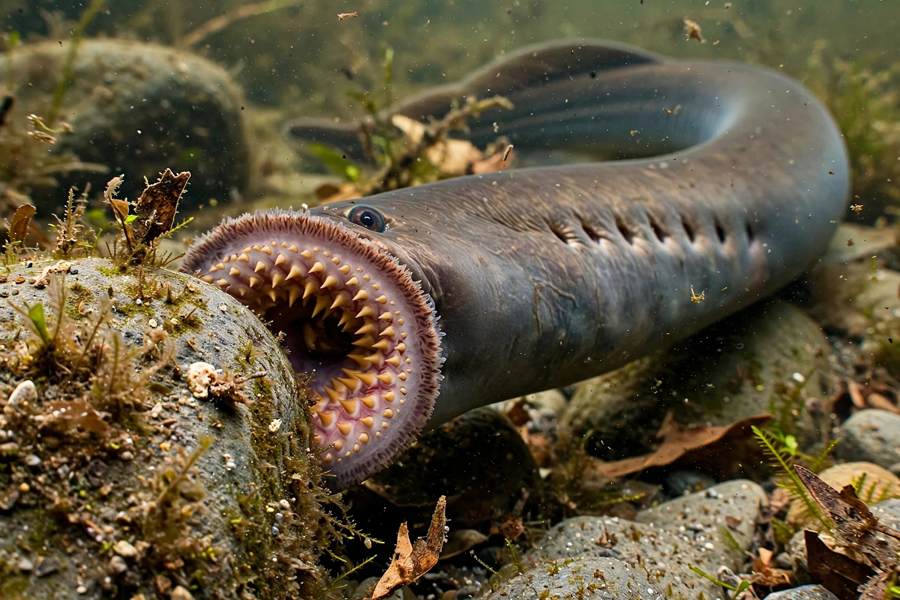

Lampreys (order Petromyzontiformes) are jawless fish of ancient lineage, characterised by an eel-like body, a toothed funnel-like sucking mouth, and seven pairs of gill openings. About 38 extant species are known.

| Kingdom | Animalia |
|---|---|
| Phylum | Chordata |
| Class | Petromyzontida |
| Order | Petromyzontiformes |
Lampreys begin life as blind filter-feeding larvae called ammocoetes, burrowed in stream sediment for years before metamorphosing. Many adults are parasitic, attaching to other fish with their sucker mouth, rasping flesh and feeding on blood; others, such as brook lampreys, do not feed as adults. Most species are anadromous, spawning in fresh water.
The sea lamprey became a notorious invader of North America's Great Lakes, devastating lake trout fisheries and requiring ongoing control programmes. Conversely lampreys have long been eaten in Europe — Henry I of England reputedly died of a 'surfeit of lampreys' — and remain a delicacy in France, Spain, Portugal and Finland. Together with hagfish they are the only surviving jawless vertebrates, giving them major importance for studying vertebrate evolution.